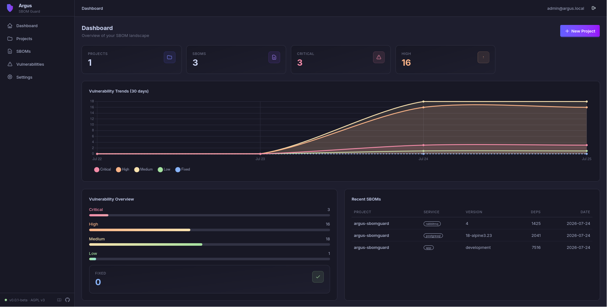

Argus SBOM Guard¶
Open-source SBOM-based vulnerability management platform.
Import CycloneDX/SPDX SBOMs, scan dependencies with Grype and OSV, track vulnerabilities over time, and monitor your software supply chain risk.
Centralized SBOM management. On-prem, deploy anywhere.
Quick Start¶
Open http://localhost:8000, log in with admin@argus.local,
and grab the one-time code from Mailpit (dev only) — or set
SHOW_LOGIN_CODE_IN_RESPONSE=true to display it directly on the login page.
Running this on a server? Follow the Deployment Guide for a copy-paste walkthrough covering hardware requirements, TLS, and production configuration.
Features¶
- SBOM Management — Upload, store, and diff CycloneDX & SPDX SBOMs
- Vulnerability Scanning — Automatic analysis via Grype + OSV API
- Vulnerability Tracking — CVE status, severity, open/fixed reconciliation, historical trends
- Alerting — Slack and email notifications for new vulnerabilities
- Supply Chain Visibility — Projects, services, dependencies, version history
- REST API + gRPC — Full API with key-based authentication
- Dashboard — Real-time trends and per-project vulnerability metrics

Who Is This For?¶
- Platform / SRE teams tracking dependencies across microservices
- Security engineers monitoring vulnerability exposure over time
- DevSecOps teams integrating SBOM management into CI/CD
- Open source maintainers generating and managing SBOMs
- Compliance teams that need SBOM history and audit trails
Architecture at a Glance¶
projects → services → sboms → dependencies
vulnerabilities ──M:N── sboms (via sbom_vulnerabilities)
vulnerability_snapshots (daily per-project metrics)
alert_configs → notifications
users → api_keys / login_tokens
| Layer | Technology |
|---|---|
| Backend | Python 3.12 + FastAPI + Celery + RabbitMQ |
| Frontend | HTMX + Jinja2 + Alpine.js + DaisyUI 5 + Tailwind CSS v4 |
| Database | PostgreSQL 18 + asyncpg |
| Vuln Scanner | Grype + OSV API |
| Auth | Passwordless email login + API keys |
Ready to get started? Deployment Guide → · Setup → · User Guide → · API Reference →